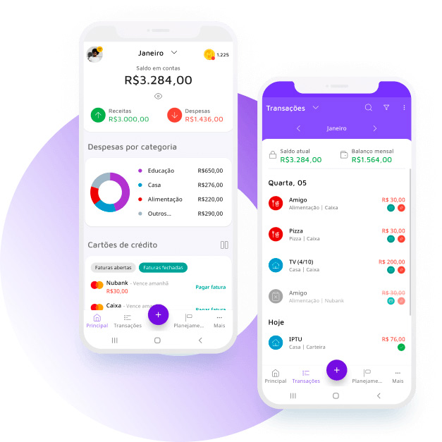
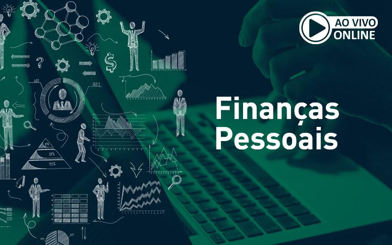

Educação Financeira: O Caminho para a Liberdade Financeira
O que é Educação Financeira?
A educação financeira é o processo de aprender a gerir bem os seus recursos financeiros. Com ela, você adquire conhecimentos e habilidades para tomar decisões mais conscientes e inteligentes sobre dinheiro.
Essa prática envolve aprender a controlar seus gastos, economizar, investir e planejar o seu futuro financeiro. Com um bom planejamento, você pode alcançar a independência financeira e viver de maneira mais tranquila.
Benefícios da Educação Financeira
- Controle dos Gastos: Saber como e onde está gastando seu dinheiro é fundamental para evitar dívidas.
- Planejamento para o Futuro: Com uma boa educação financeira, você pode começar a planejar sua aposentadoria ou a compra de um imóvel.
- Redução do Estresse Financeiro: Uma gestão eficiente reduz a preocupação constante com as finanças pessoais.
- Aumento das Oportunidades de Investir: Ao entender como funcionam os investimentos, você pode colocar seu dinheiro para trabalhar.
Como Controlar suas Finanças Pessoais?
Um bom controle financeiro começa com simples hábitos que ajudam a manter a organização. Veja algumas dicas práticas para organizar sua vida financeira:
- 1. Crie um Orçamento: Defina um orçamento mensal para controlar seus gastos.
- 2. Economize Regularmente: Reserve uma parte de sua renda para poupança ou investimentos.
- 3. Evite Compras por Impulso: Planeje suas compras e evite gastos desnecessários.
- 4. Negocie Dívidas: Se você está endividado, entre em contato com credores para negociar melhores condições.
Dicas para Melhorar sua Educação Financeira
Leia Livros e Artigos sobre Finanças
Aprender com livros e especialistas é uma excelente forma de ampliar seu conhecimento financeiro. Existem muitos livros que oferecem dicas práticas e ajudam a entender o mundo das finanças.
Use Aplicativos de Controle Financeiro
Existem diversos aplicativos gratuitos e pagos que ajudam a controlar seus gastos, fazer orçamentos e até investir seu dinheiro.
Participe de Cursos Online
Diversas plataformas oferecem cursos gratuitos ou pagos sobre finanças pessoais. Aproveite para aprender e investir no seu conhecimento.
Infográfico: Como Funciona o Dinheiro?
Entenda, de forma visual, como o dinheiro circula e como ele pode ser melhor aproveitado no dia a dia.

Erros Comuns na Gestão Financeira
- 1. Não Planejar as Finanças: Muitos não estabelecem metas financeiras, o que leva ao descontrole.
- 2. Gastos Excessivos: Comprar por impulso e não manter um controle rigoroso das despesas pode resultar em dívidas.
- 3. Não Investir: Deixar o dinheiro parado na conta corrente sem buscar opções de investimentos é um erro.
Perguntas Frequentes sobre Educação Financeira
1. Como começar a controlar meu orçamento?
Comece anotando todos os seus gastos, tanto fixos quanto variáveis. Em seguida, compare sua receita com seus gastos para ver onde você pode economizar.
2. Qual a importância de criar um fundo de emergência?
Ter um fundo de emergência é essencial para cobrir imprevistos sem comprometer suas finanças pessoais e sem recorrer a empréstimos.
3. Como posso começar a investir se ainda não entendo de finanças?
Se você é iniciante, comece com investimentos mais simples, como a poupança ou o Tesouro Direto. Além disso, busque sempre aprender mais sobre o mercado financeiro.